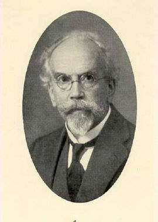

|  |
Axenfeld's syndrome = A syndrome characterised by posterior corneal embryotoxon, prominent Schwalbe's line and iris adhesion to the Schwalbe’s line.
He was habilitated in 1895, while working in the Marburg eye clinic. The following year he became Wilhelm Uhthoff's (1853-1927) assistant in Breslau, but already in 1897 he accepted an invitation to become professor and director of the university ophthalmological clinic in Rostock. In 1901 he assumed the chair of ophthalmology in Freiburg im Breisgau, where he worked until his death in 1930.
Axenfeld made fundamental contributions to the anatomy, bacteriology and histology of the eye, as well as operative eye medicine. He had a special interest in infections of the eye and in Freiburg his excellent clinical and laboratory facilities enabled him to expand his researches in this field.
The excellence of his ophthalmological service, his teaching abilities and his operative skills attracted many postgraduates and Axenfeld gained an international reputation. In 1925 he was elected to the presidency of the German Ophthalmological Society (Deutsche ophthalmologische Gesellschaft), from whom he received the Graefe medal for his works on metastatic ophthalmia. He was also the recipient of the gold medal of the American Ophthalmological Society for his services to the speciality.
Axenfeld maintained his acute intellectual facilities until the end of his career. He became unwell after a brief academic visit to Japan and, following an abdominal operation in Freiburg, he died on July 29, 1930 at the age of 64 years.
In 1902 Axenfeld published a monograph on trachoma, and this was followed by numerous articles on tuberculosis of the eye. By 1907 he published a book on ophthalmological bacteriology and in 1909 his Textbook of Ophthalmology, which became the standard work in its field. In addition to his books Axenfeld was the author or co-author of almost 200 medical articles.
From 1899 Axenfeld was co-editor of the Klinische Monatsblätter für Augenheilkunde. He was a collaborator of Otto von Schjerning (1853-1921) in the Handbuch der ärztlichen Erfahrungen im Weltkriege 1914-1918 (Leipzig, 1921-1922), and in Wilhelm Kolle (1868-1935) and August Paul von Wassermann (1866-1925), publishers: Handbuch der pathogenen Microorganismen. 6 volumes; Jena, 1903-1909.
Bibliography: